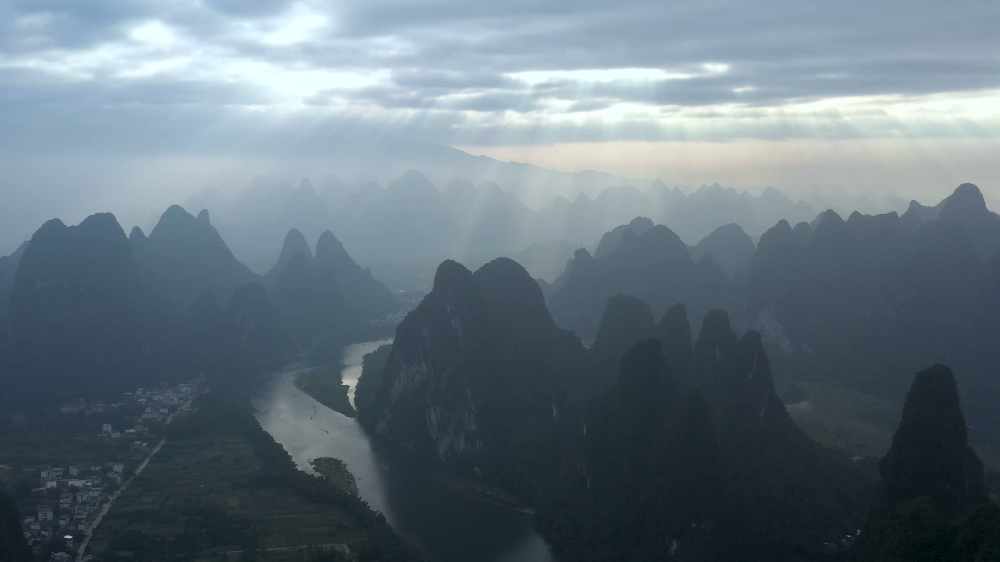
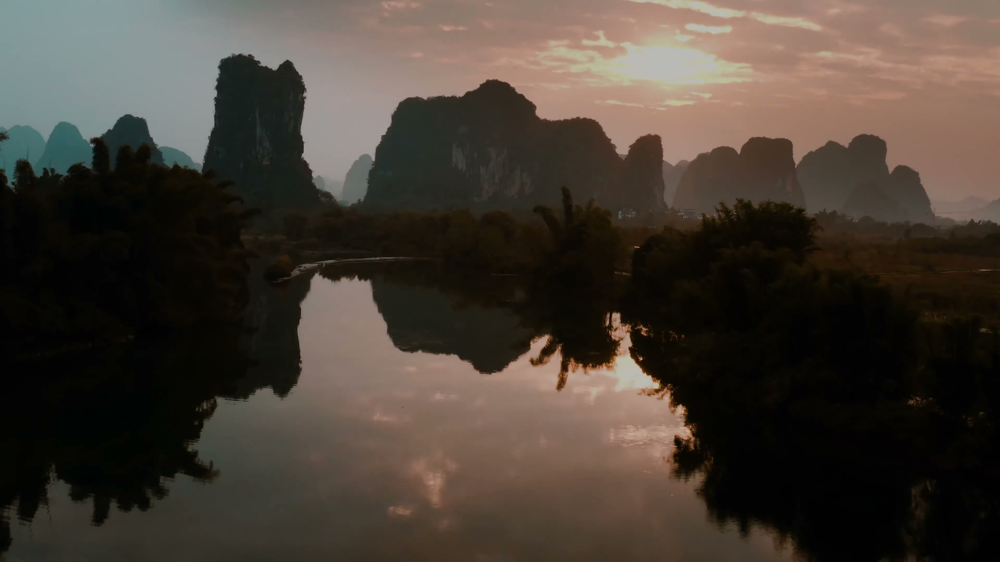
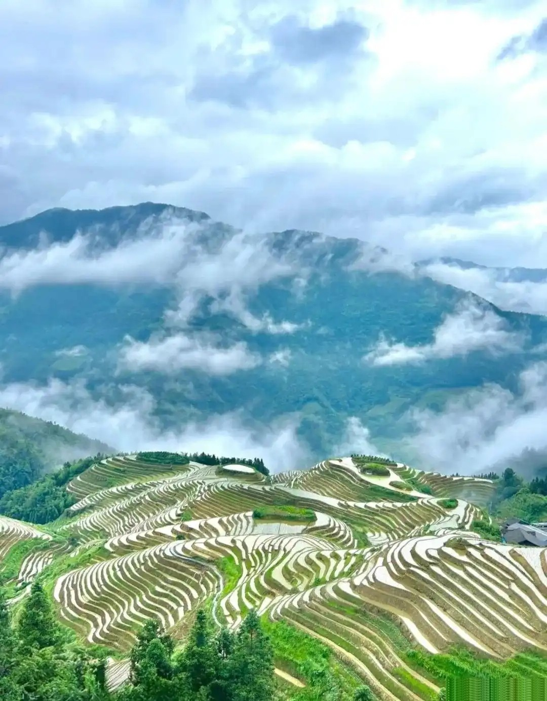
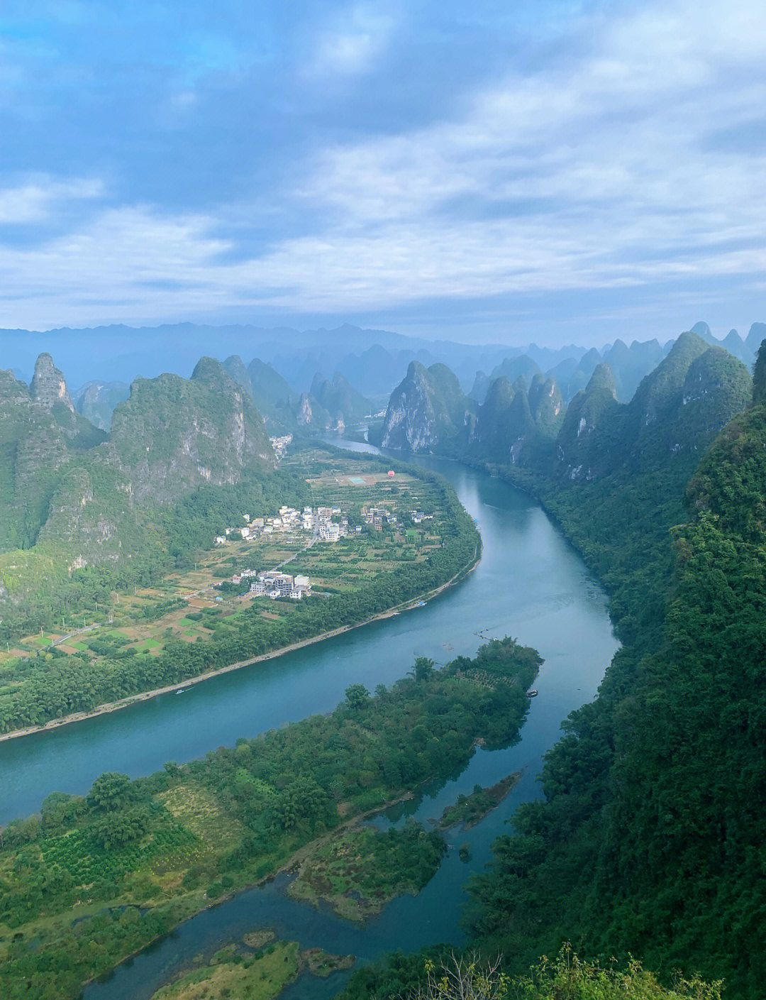

Guangxi
广西 • Guangxi Zhuang Autonomous Region
Last updated: July 2026

The karst peaks near Guilin — ancient seabed thrust upward over millions of years.
Most people come to China and head straight for Beijing's Forbidden City or Shanghai's skyline. They miss Guangxi. And Guangxi is where China shows off.
The first thing you notice is the mountains. They don't roll gently like hills. They punch straight up out of flat ground, covered in green so thick it looks black in the shadows. Those are karst peaks — ancient seabed pushed up over millions of years. The Li River snakes between them, and on a misty morning it looks exactly like a Chinese painting. Because that's where the paintings came from.
Start in Guilin
Guilin is the gateway. Don't spend too much time in the city itself — the magic is outside. Take a boat down the Li River to Yangshuo. Four hours of peaks sliding past like a slow-motion movie. The river is a deep jade green, and water buffalo stand motionless in the shallows.
Yangshuo: the real base camp

A cormorant fisherman on the Li River near Yangshuo — a scene unchanged for centuries.
Yangshuo is the real base camp. Rent a bicycle. Ride through the valleys between karst peaks that don't look real. Stop at a farmhouse for lunch. In the evening, West Street comes alive with barbecue stalls and beer. Try the beer fish — whole fish braised in local lager and tomatoes. It's proof that simple cooking can be unforgettable.
Longsheng: the rice terraces

The Longsheng Rice Terraces — carved by hand over 700 years, still farmed today.
Then go deeper. Longsheng is three hours north, and the rice terraces there have been carved into mountainsides for 700 years. In spring, they flood with water and reflect the sky like giant mirrors. In autumn, they turn gold. You can stay in a guesthouse run by a Zhuang family — no TVs, no Wi-Fi in some villages, just frogs at night and roosters at dawn.
Liuzhou: luosifen
Head south to Liuzhou for one reason only: luosifen. This is the stinkiest noodle soup you will ever eat. Fermented bamboo shoots give it a smell that both haunts and seduces. It's so famous it has its own museum in the city. Eat it from a street stall, not a restaurant.
Nanning: the capital
Nanning, the capital, is a modern city with a subtropical pulse. The Guangxi Museum is genuinely good — bronze drums, Zhuang textiles, the complete story of the region's 25 ethnic minorities. Climb Qingxiu Mountain for a view of the city skyline rising above banana trees.
What nobody tells you
- The Leye Tiankeng sinkholes in the north are 29 massive pits with entire forests growing inside. Almost no tourists go there.
- Detian Waterfall sits right on the Vietnam border. Take a bamboo raft to the foot of the falls, where you can watch both countries at once.
- The Chengyang Wind and Rain Bridge is a covered wooden bridge built without a single metal nail. The Dong minority built it, and it's still standing after 100 years.
- The 20-yuan banknote — the scene on the back is a real place. It's Xingping Ancient Town. Quieter than Yangshuo, cheaper, and you can stand exactly where the photographer stood.
Practicalities
When to go: April to October. The rain brings the mist that makes the karst look surreal. October is clearest. Winter is cold and gray — the karst looks sad.
Getting there: Fly into Guilin (KWL) or Nanning (NNG). High-speed rail from Guangzhou takes about 3 hours. From Hong Kong, it's 4 hours by train.
Visa: Under China's visa-free transit and ASEAN facilitation policies, travelers from many countries — including most ASEAN nations — can visit Guilin, Yangshuo and Longsheng for up to 144 hours without a visa. If you're in the region, Guangxi is a weekend trip you can make without paperwork.

The Li River at dawn — mist settling between the karst peaks.
Produced by Deep in China — Go deeper than any tourist ever goes.